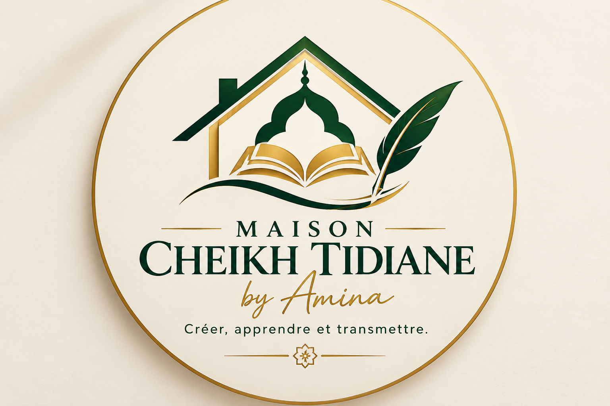

Je suis Amina Thioune, développeuse web junior et créatrice de projets numériques.
Je m'appelle Amina Thioune. Je suis passionnée par l'apprentissage et la création numérique. À travers mes projets, je développe mes compétences en développement web tout en construisant des solutions simples et utiles. Mon objectif est de progresser chaque jour et de transformer mes idées en réalisations concrètes.
Boutique en ligne de présentation de voiles avec catalogue de produits, affichage des prix et commande via WhatsApp.
Visiter le projetPortfolio personnel regroupant mes projets, mes compétences et mon parcours d'apprentissage.
J'aime écrire et partager des réflexions inspirées de mon parcours, de mes expériences et de mes centres d'intérêt. Cette section évoluera progressivement avec de nouveaux contenus.